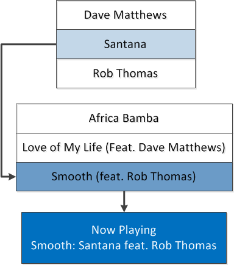

Open topic with navigation
You are here: Implementing Applications > Best Practices and Design Requirements > Collaborative Artists Best Practices
Collaborative Artists Best Practices
The following topic provides best practices for handling collaborations in your application.
Handling Collaborations when Processing a Collection
When looking up a track using a text-based lookup, such as when initially processing a user’s collection, use the following best practices:
- If the input string matches a single artist in the database, such as "Santana," associate the track in the application database with the single artist.
-
If the input string matches a collaboration in the database, such as "Santana featuring Rob Thomas," associate the track in the application database with the primary collaborator and the collaboration. In this case, the Contributor, "Santana featuring Rob Thomas," will have a Contributor child, “Santana,” and the track should be associated with “Santana” and “Santana featuring Rob Thomas."
- If the input string is a collaboration, but does not match a collaboration in the database, GNSDK for Desktop attempts to match on the primary collaborator in the input, which would be “Santana” in this example. If the primary collaborator matches an artist in the database, the result will be the single artist. There will be an indication in the result that only part of the collaboration was matched. Associate the track in the application database with the single artist and with the original input string.
Displaying Collaborations during Playback
When determining what should be displayed during playback of music, use the following best practices:
- When a track by a single artist is playing, your application should display the Gracenote normalized text string. For example, when a track by Santana is playing, “Santana” should be displayed.
- When a track by a collaboration is playing, and GNSDK for Desktop has matched the collaboration, the application should display the collaboration name. For example, when a track by “Santana featuring Rob Thomas” is playing, the collaboration name “Santana featuring Rob Thomas” should be displayed.
- When a track by a collaboration is playing, but only part of the collaboration was matched, Gracenote recommends that you display the original tag data for that track during playback. For example, when a track by “Santana featuring Unknown Artist” is playing, but only "Santana" was matched, the collaboration name “Santana featuring Unknown Artist” should be displayed. Gracenote recommends that you do not overwrite the original tag data.
Displaying Collaborations in Navigation
When creating navigation in your application, use the following best practices:
-
If the user is navigating through the interface, and comes to “Santana” in a drop-down list, all tracks by “Santana” should be displayed, including tracks on which Santana is the primary collaborator. The list should be created using the associations that you created during the initial text-lookup phase. If the user selects “Play songs by Santana,” all songs by Santana and songs on which Santana is the primary collaborator can be played.
- Gracenote does not recommend that collaborations appear in drop-down lists of artists. For example, don’t list “Santana” and “Santana featuring Rob Thomas” in the same drop-down list. Instead, include “Santana” in the drop-down list.

Handling Collaborations in Playlists
When creating a playlist, if the user is able to select a collaboration as a seed, then only songs by that collaboration should be played. For example, if the user selects “Santana featuring Rob Thomas” as a seed for a playlist, they should only hear songs by that specific collaboration. This only applies to playlists of the form “Play songs by <artist>.” It does not apply to “More Like This” playlists, such as “Play songs like <artist>,” which use Gracenote descriptors to find similar artists.
How can we improve this documentation?